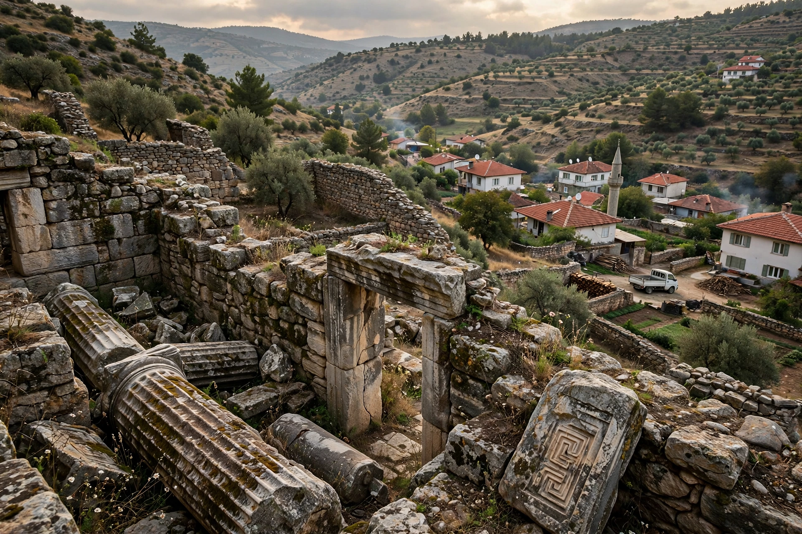

Atuda
| Atuda | |
|---|---|
| Location | Caria, Anatolia (near modern Hisar, Denizli Province, Turkey) |
| Region | Southwestern Anatolia |
| Type | Ancient city |
| Part of | Aphrodisias territory (from the 2nd century BC) |

Atuda (Ancient Greek: Ἄτουδα) was a town of ancient Caria in southwestern Anatolia, situated in the upper valley of the Marsyas river near the modern village of Hisar in Turkey's Denizli Province. It lay within the orbit of nearby Aphrodisias, one of the major cities of Roman Asia Minor.
History
Atuda is known chiefly from inscriptions and coins rather than literary sources. In the Hellenistic period it was joined in a political union (sympoliteia) with Aphrodisias and Plarasa; settlements in the union were represented on shared coinage and decrees. The town possessed a gymnasium and civic magistracies on the normal Greek model, and inscriptions attest local priesthoods and benefactors. Like other small Carian communities, it gradually lost its separate identity within the territory of Aphrodisias in the Roman imperial period.
Remains
The site preserves scattered architectural blocks, inscriptions and traces of fortification amid the later village, though it has been far less extensively excavated than Aphrodisias itself. Finds from Atuda, including honorific and funerary inscriptions, are kept at the Aphrodisias Museum.
See also: Caria · Aphrodisias · Plarasa